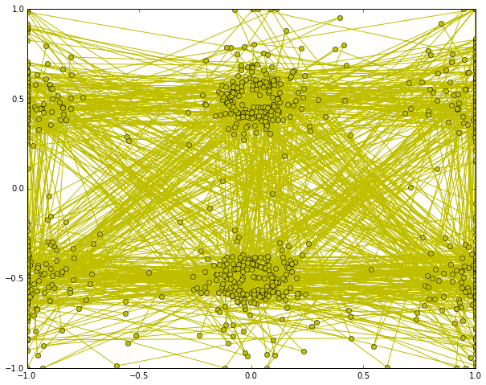

Simulated Annealing
By Dibakar Sigdel : Date April-26-2016
Introduction to Simulated Annealing
Simulated annealing [1] copies a phenomenon in nature--the annealing of solids--to optimize a complex system. Annealing refers to heating a solid and then cooling it slowly. Atoms then assume a nearly globally minimum energy state. In 1953 Metropolis created an algorithm to simulate the annealing process. The algorithm simulates a small random displacement of an atom that results in a change in energy. If the change in energy is negative, the energy state of the new configuration is lower and the new configuration is accepted. If the change in energy is positive, the new configuration has a higher energy state; however, it may still be accepted according to the Boltzmann probability factor:
$$P = exp(\frac{-\triangle E}{K_{b}T})$$
where $K_b$ is the Boltzmann constant and T is the current temperature. By examining this equation we should note two things: the probability is proportional to temperature--as the solid cools, the probability gets smaller; and inversely proportional to --as the change in energy is larger the probability of accepting the change gets smaller.
- Pictorial Algorithm
from IPython.display import Image
Image(filename='sim.png')

When applied to engineering design, an analogy is made between energy and the objective function. The design is started at a high “temperature”, where it has a high objective (we assume we are minimizing). Random perturbations are then made to the design. If the objective is lower, the new design is made the current design; if it is higher, it may still be accepted according the probability given by the Boltzmann factor. The Boltzmann probability is compared to a random number drawn from a uniform distribution between 0 and 1; if the random number is smaller than the Boltzmann probability, the configuration is accepted. This allows the algorithm to escape local minima.
- Required Libraries
import matplotlib
import numpy as np
import matplotlib.pyplot as plt
import random
import math
from mpl_toolkits.mplot3d import Axes3D
from matplotlib import cm
from matplotlib.ticker import LinearLocator, FormatStrFormatter
import matplotlib.pyplot as plt
import numpy as np
%matplotlib inline
Part -I : Problem set up
Define Objective function
Consider a 2D system where atoms are interacting with the surface of a material. A model for the interaction potential is
$$V(x) = V_{o}\left \lbrace nA + \sum_{i=1}^{n}[x_{i}^{2} - A \cos(2\pi x_{i})]\right \rbrace $$
where $n = 2$: two dimensions.
A = 10; $V_{o}$ is in energy unit.
Consider the section $x_{1,2} \in [-4,4]$ of the surface.
- Surface Potential function
def potential(x1,x2):
obj = (2*10.0) + x1**2 + x2**2 - (10.0)*(math.cos(2.0*3.1415*x1) - math.cos(2.0*3.1415*x2))
return obj
- Design variables for mesh points
ix = np.arange(-4.0, 4.0, 0.05)
iy = np.arange(-4.0, 4.0, 0.05)
X,Y = np.meshgrid(ix, iy)
fz = np.zeros(X.shape)
for i in range(X.shape[0]):
for j in range(X.shape[1]):
fz[i][j] = potential(X[i][j],Y[i][j])
3D plot of surface potential
fig = plt.figure(figsize=(14, 10))
ax = fig.gca(projection='3d')
surf = ax.plot_surface(X, Y, fz, rstride=1, cstride=1, cmap=cm.coolwarm,
linewidth=0, antialiased=False)
ax.set_zlim(-0.01, 60.01)
ax.zaxis.set_major_locator(LinearLocator(10))
ax.zaxis.set_major_formatter(FormatStrFormatter('%.02f'))
fig.colorbar(surf, shrink=0.5, aspect=5)
plt.show()
Density Plot of surface potential
plt.figure(figsize=(12, 8))
# Specify contour lines
CS = plt.contour(x1m, x2m, fm)#,lines)
# Label contours
plt.clabel(CS, inline=1, fontsize=10)
# Add some text to the plot
plt.title('Density plot of surface potential')
plt.xlabel('x1')
plt.ylabel('x2')
<matplotlib.text.Text at 0x12e704410>

Part - II : Simulation
Task
Put $N = 1000$ atoms on the surface. Compute a configuration $X_{o} = {x_{1},...,x_{N}}$ of minial potential energy $E[X_{o}]$ using simulated annealing. Apply Bose statistics, any number of atoms may occupy a local minimum $\vec{x}_{min}$.
- Simulation setting
# Start location
x_start = [0.5, -0.5]
#Number of particles
N =1000
# Number of cycles
n = 1000
# Number of trials per cycle
m = 500
# Number of accepted solutions
na = 0.0
# Probability of accepting worse solution at the start
p1 = 0.7
# Probability of accepting worse solution at the end
p50 = 0.001
# Initial temperature
t1 = -1.0/math.log(p1)
# Final temperature
t50 = -1.0/math.log(p50)
# Fractional reduction every cycle
frac = (t50/t1)**(1.0/(n-1.0))
# Initialize x
x = np.zeros((n+1,2))
x[0] = x_start
xi = np.zeros(2)
xi = x_start
na = na + 1.0
# Current best results so far
xc = np.zeros(2)
xc = x[0]
fc = potential(xi[0],xi[1])
fs = np.zeros(n+1)
fs[0] = fc
# Current temperature
t = t1
# DeltaE Average
DeltaE_avg = 0.0
- Simulation
for i in range(n):
#print 'Cycle: ' + str(i) + ' with Temperature: ' + str(t)
for j in range(m):
# Generate new trial points
xi[0] = xc[0] + random.random() - 0.5
xi[1] = xc[1] + random.random() - 0.5
# Clip to upper and lower bounds
xi[0] = max(min(xi[0],1.0),-1.0)
xi[1] = max(min(xi[1],1.0),-1.0)
DeltaE = abs(f(xi)-fc)
if (potential(xi[0],xi[1])>fc):
# Initialize DeltaE_avg if a worse solution was found
# on the first iteration
if (i==0 and j==0): DeltaE_avg = DeltaE
# objective function is worse
# generate probability of acceptance
p = math.exp(-DeltaE/(DeltaE_avg * t))
# determine whether to accept worse point
if (random.random()<p):
# accept the worse solution
accept = True
else:
# don't accept the worse solution
accept = False
else:
# objective function is lower, automatically accept
accept = True
if (accept==True):
# update currently accepted solution
xc[0] = xi[0]
xc[1] = xi[1]
fc = potential(xc[0],xc[1])
# increment number of accepted solutions
na = na + 1.0
# update DeltaE_avg
DeltaE_avg = (DeltaE_avg * (na-1.0) + DeltaE) / na
# Record the best x values at the end of every cycle
x[i+1][0] = xc[0]
x[i+1][1] = xc[1]
fs[i+1] = fc
# Lower the temperature for next cycle
t = frac * t
# print solution
print 'Best solution: ' + str(xc)
print 'Best objective: ' + str(fc)
plt.figure(figsize=(10, 8))
plt.plot(x[:,0],x[:,1],'y-o')
#plt.savefig('contour.png')
fig = plt.figure(figsize=(10, 8))
ax1 = fig.add_subplot(211)
ax1.plot(fs,'r.-')
ax1.legend(['Objective'])
ax2 = fig.add_subplot(212)
ax2.plot(x[:,0],'b.-')
ax2.plot(x[:,1],'g--')
ax2.legend(['x1','x2'])
# Save the figure as a PNG
#plt.savefig('iterations.png')
plt.show()
Best solution: [ 0.91536557 -0.66902677]
Best objective: 7.79514624035


- Repeat this for 1000 particles
References
1 . Simulated Annealing Tutorial http://apmonitor.com/me575/index.php/Main/SimulatedAnnealing
2 . The Simulated Annealing Algorithm http://katrinaeg.com/simulated-annealing.html
3 . Simulated Annealing for beginners http://www.theprojectspot.com/tutorial-post/simulated-annealing-algorithm-for-beginners/6
4 . Simulated Annealing: http://csg.sph.umich.edu/abecasis/class/2006/615.19.pdf
5 . Simulated Annealing : http://mathworld.wolfram.com/SimulatedAnnealing.html